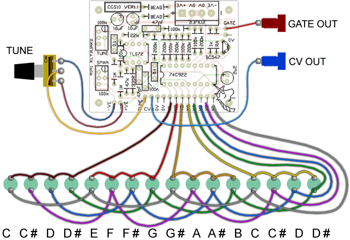

|
Pedal board/ Mini Keyboard for music synthesizers. The previous version can be found here. Elsewhere I have said the best use I can think of for a set of pedals from an old organ would be to control the base frequency at which a sequencer is running. I am forever having to abandon whatever chord I am playing to reach up and tap the keyboard controlling the sequencer. On the other hand, I am quite capable of playing the organ pedal board, but don't because the sequencer is running my bass line. Other DIYers have suggested creating a miniature "calculator" style keyboard that would allow them to pick out a tune on a small hand-held module. I can think of the advantages of having such a keypad permanently built into the control panel of synth too. This module can be used for both of the above purposes, and any other that requires a keyboard of around one octave range. How to use this module: Connect the output to a VCO or similar voltage controlled device. Hitting a key/pedal will push the output to that voltage, and supply a gate pulse for as long as the key is held. It's behavior is very much like any of the older monophonic keyboards. If you have set it up with a calculator style keypad, try connecting the output to a VCA. That will give you a push-button volume control. If you are running a sequencer or wavetable that has voltage controlled selection of sequence length, waveform or whatever, you would have push-button control of that function. Experiment with it. A little on how it works:
The schematic of the Mini Keyboard Ver1.1. By far most of the work is done by the Keyboard scanning chip, a 74C922. This chip is perfect for the job. It scans keys arranged in a 4x4 matrix, and when one is pressed, transfers a binary value corresponding to the button pressed to its data outputs, and also sends its data available (DA) output HIGH. When the key is released, the DA line returns to LOW, but the latched key data remains on the data outputs. An R/2R resistor ladder converts the binary data into a voltage. This is buffered using a traditional two stage op-amp buffer. Adjustments are provided for Tune and Span, so the output can be zeroed, and the span set to 1 volt per octave. There is an additional 1M resistor so an external tune pot (100k linear) can be added. Note that tuning voltage is up-side down: taking it positive will send the frequency down, so wire the tuning pot accordingly (CCW end to +VE and CW end to -VE). The data available output is buffered using an emitter follower, and will give a gate signal that goes between 0 volts and around 14 volts.
Construction
The component overlay. Click here for an enlarged version.
 Before you start assembly, check the board for etching faults. Look for any shorts between tracks, or open circuits due to over etching. Take this opportunity to sand the edges of the board if needed, removing any splinters or rough edges. When you are happy with the printed circuit board, construction can proceed as normal, starting with the resistors first, followed by the IC sockets if used, then moving onto the taller components. Take particular care with the orientation of the polarized components, the electrolytics, transistors and ICs. When inserting the ICs in their sockets, take care not to accidentally bend any of the pins under the chip. Also, make sure the notch on the chip is aligned with the notch marked on the PCB overlay. Please note that the CMOS chips are static sensitive devices, so make sure you handle them correctly. The best way to tune this is to play the lowest "C" (results in 0000 binary at the output of the chip) and set the TUNE trimmer so the CV output reads exactly 0 volts. When this is done, play the high "C" (results in 1100 binary at the output of the chip), and adjust the SPAN trimmer until the output reads exactly 1 volt. You may then adjust the TUNE trimmer again to offset the output to whatever voltage you require. Notes:
Parts list This is a guide only. Parts needed will vary with individual constructor's needs. If anyone is interested in buying these boards, please check the PCBs for Sale page to see if I have any in stock.
Can't find the parts? See the parts FAQ to see if I've already answered the question. Also see the CGS Synth discussion group.
Article, art & design copyright 2001 by Ken Stone
| ||||||||||||||||||||||||||||||||||||||||||||||||||||||